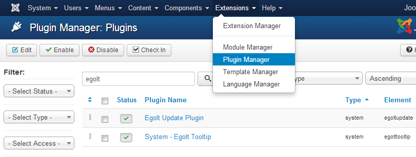
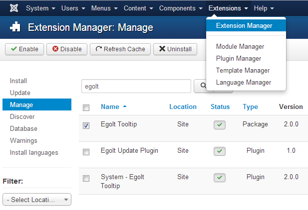
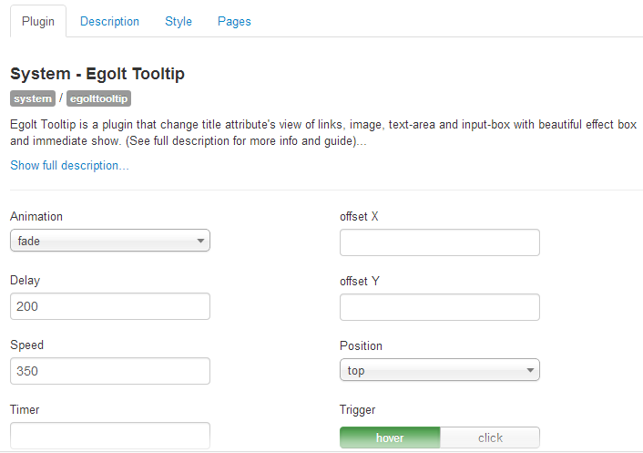

Index
1) Configuration to Egolt Tooltip
Egolt Tooltip is a user-friendly product and you can setup it very easily in just less than a 1 minute! This section will help you to install it correctly.
1.1) Requirements
Egolt Tooltip will only work correctly if your setup meets these requirements:
- Up-to-date version of compatible softwares:
- Joomla! 2.5
- PHP 5.3+
- MySQL 5+
Important: We can only provide support for setups that:
- meet the above requirements;
- do not have 3rd party files or software core files which have been altered in any way.
1.2) Installation
You can install Egolt Tooltip by using the Joomla! core extension manager available in the Joomla! Administrator Control Panel.
Note: When updating Egolt Tooltip, you do not need to uninstall it first. The package will update all the files automatically.
Keep in mind that when you update to a major new version (or uninstall first), you might loose some configuration settings.
To install via the Joomla! Extension Manager, just follow these steps (based on Joomla 2.5 setup):
- Download the extension zip.
- Log into your Joomla administrator
- In the menu, choose: Extensions >> Extension Manager
- Under 'Upload Package File' select the extension zip.
- Click on 'Upload & Install'
If you have problems installing Egolt Tooltip, please try the manual installation process as described here: docs.joomla.org/Installing_an_extension
1.3) Enable the plugin
Go to "Extensions" menu in Joomla! administration panel,then "Plugin Manager" and following that "System - Egolt Tooltip". Then enable it.

1.4) Uninstallation
You can uninstall Egolt Tooltip by using the Joomla! extension manager available in the Joomla! Administrator Control Panel.

For uninstall Egolt Tooltip just uninstall Egolt Tooltip (Package). Then all extensions related to the product will be uninstalled automatically.
Notice that Egolt Update will not be uninstalled over the uninstallation process described above. If you are sure that no other Egolt products are running in your site, you can delete Egolt Update plugin.
2) Start Using Egolt Tooltip
Using Egolt Tooltip is a very easy. Just see the follow sections and examples.
2.1) Simple syntax
Go to edit one of your Joomla! website contents (or everwhere in Joomla! which there is an editor or textarea). Add the below syntax where you need to add the tooltip:
{egtip tip="Hello Tooltip!" } My Text {/egtip}
2.2) Advanced options
Besides the simple syntax of Egolt Tooltip you can user various options to costumize the tooltip and make it suitable for different situations:
{egtip tip="Hello Tooltip!" position="right" animation="swing" delay="300" } Advanced options {/egtip}
By default and wihtout adding them in the syntax, these options inherited from the Egolt Tooltip Plugin parameters. The list of these advanced options is here:
| Option | Description |
|---|---|
| animation [fade, grow, swing, slide, fall] |
Determines how the tooltip will animate in and out. |
| speed | The speed of the animation. |
| delay | How long it takes (in milliseconds) for the tooltip to start animating in. |
| arrow [0, 1] |
Adds the 'speech bubble arrow' to the tooltip. |
| maxwidth | The max width for the tooltip. If the tooltip ends up being smaller than the set max width, the tooltip's width will be set automatically |
| position [top, top-right, top-left, bottom, bottom-right, bottom-left, right, left] |
The position of the tooltip. |
| offsetx | Offsets the tooltip (in pixels) farther left/right from the origin. |
| offsety | Offsets the tooltip (in pixels) farther up/down from the origin. |
| trigger [hover, click] |
How tooltips should be activated and closed. |
| type [image, snap] |
Specify the special modes. "image" for setting images and "snap" for inserting snapshots on the tooltips. |
2.3) Insert image
To show an image in the Tooltip, use the syntax in the below form:
{egtip tip="http://www.egolt.com/images/logo.png" type="image" } Image in Tooltip {/egtip}
2.4) Insert snapshoot
To show an snapshot of a website in the Tooltip, use the syntax in the below form:
{egtip tip="http://www.egolt.com" type="snap" } Image in Tooltip {/egtip}
2.5) Insert HTML code
To show an HTML block of code in the Tooltip, use the syntax in the below form:
{egtip tip="<strong>HTML</strong> <span style='color:orange;' >code</span> is here" } HTML in Tooltip {/egtip}
WARNING: You must use ( ' ) instead of ( " ) in the HTML tooltip content(tip).
2.6) As an HTML tooltip
You can enable an HTML tooltip based on the plugin configurations besides the Joomla! tooltip too. To do this just go to the Egolt Tooltip plugin and set the "HTML Tooltip" option. After that the HTML syntax is in the form below:
On class
<a title="Tooltip is here!" class="egtip" > HTML Link wiht Tooltip </a>
On Title
<a title="Tooltip is here!" > HTML Link wiht Tooltip </a>
3) Plugin General Options
There are 3 types of options which you can change them in the Egolt Tooltip plugin, Including basic, style and pages options.

3.1) Basic
Most of the basic options are availabe in using tips individually in the editor. However some of them are just defined in the plugin general options and you must change them in this area.| Option | Description |
|---|---|
| Animation [fade, grow, swing, slide, fall] |
Determines how the tooltip will animate in and out. In IE9 and 8, all animations default to a JavaScript generated, fade animation. |
| Speed | The speed of the animation. |
| Delay | How long it takes (in milliseconds) for the tooltip to start animating in. |
| Timer | How long the tooltip should be allowed to live before closing. |
| Update animation | If a tooltip is open while its content is updated, play a subtle animation when the content changes. |
| Position [top, top-right, top-left, bottom, bottom-right, bottom-left, right, left] |
The position of the tooltip. |
| Offset X | Offsets the tooltip (in pixels) farther left/right from the origin. |
| Offset Y | Offsets the tooltip (in pixels) farther up/down from the origin. |
| Trigger [hover, click] |
How tooltips should be activated and closed. |
| Interactive [Yes, No] |
Create a delay that allows users to interact with the tooltip. The tooltip will close after the user hovers off the tooltip or taps off of it. |
| Interactive tolerance | If the tooltip is interactive and activated by a hover event, set the amount of time (milliseconds) allowed for a user to hover off of the tooltip activator (origin) on to the tooltip itself - keeping the tooltip from closing. |
| Interactive Auto Close [Yes, No] |
If the tooltip is interactive and activated by a hover event, set whether the tooltip should automatically close once the mouse leaves. |
| Touch devices [Yes, No] |
If YES, the tooltip will run on touch devices too (tablets, phones, etc). |
| HTML Tooltip [On title, On class, No] |
Select if you want to enable an HTML tooltip based on the plugin configurations besides the Joomla! tooltip too. 'On class' means the tooltip will occure on any HTML elements in which they have the 'egtip' class. 'On title' means it is enabled for any HTML elements in which they have the 'title' attribute. If you need the tooltip to be used just on the Joomla! cases you added, select 'No' option. |
3.2) Style
Themes and styles of the Tooltip could be set by options in this area.
| Option | Description |
|---|---|
| Theme | You can set the theme used for the tooltip. |
| Arrow [Yes, No] |
Adds the 'speech bubble arrow' to the tooltip. |
| Arrow color | A specific color for the 'speech bubble arrow'. If this is empty, it will inherit the tooltip's background color. |
| Fixed width | A fixed width for the tooltip. The tooltip will always be a consistent width - no matter the content size. |
| Max Width | The max width for the tooltip. If the tooltip ends up being smaller than the set max width, the tooltip's width will be set automatically |
3.3) Pages
Availability of the tooltip in Joomla! pages could be configured by the options in this area.
| Option | Description |
|---|---|
| Enabled pages [All pages, Selected target, Unselected target] |
Type of including or not inclung Joomla! pages. |
| Target Pages | The target pages (selected target or unselected target based on the previous option) |